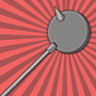

DOWNLOAD
PATCH NOTES
WIKI
RANKINGS
DISCORD SERVER
GITHUB
DOWNLOAD
PATCH NOTES
WIKI
RANKINGS
DISCORD SERVER
GITHUB

Become a veritable tank with these technological wonders! Diverse defenses at the cost of offensive potential.
|  |
Jake's Mace Jake's mace is good for keeping you healthy and discouraging bad guys. |

|
Simon Petrikov's Glasses Glasses of the brilliant scientists and eventual wizard, Simon Petrikov. |

|
Robo Suit A tough, resistant robotic suit of armor. |

|
Grob Gob Glob Grod's Device This Martian device does many things including draining magic juices. |

|
Anti-Gravity Tote Chamber This miraculous device is used to safely store the most perfect of snacks. |